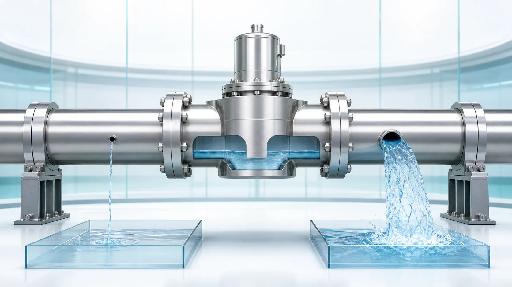
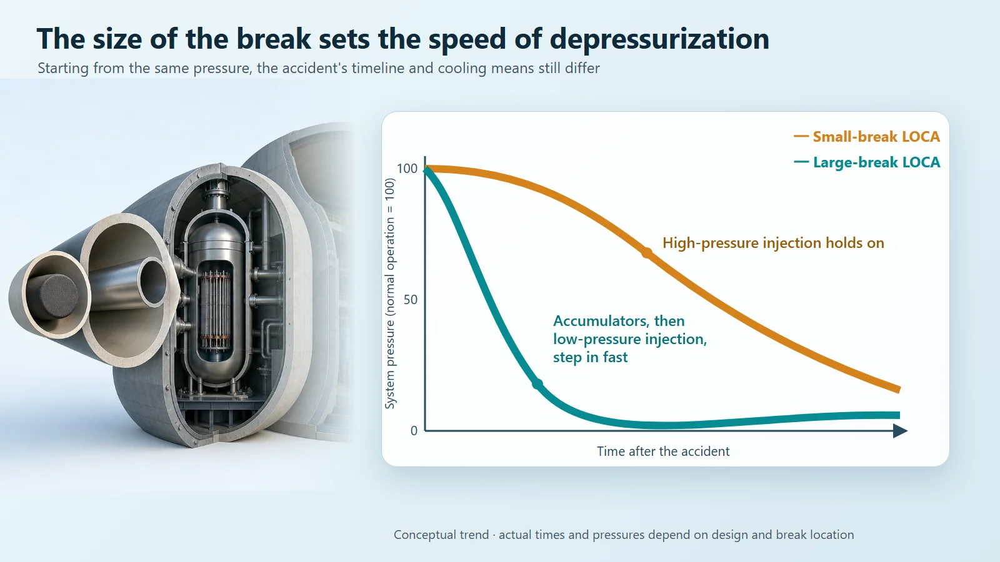
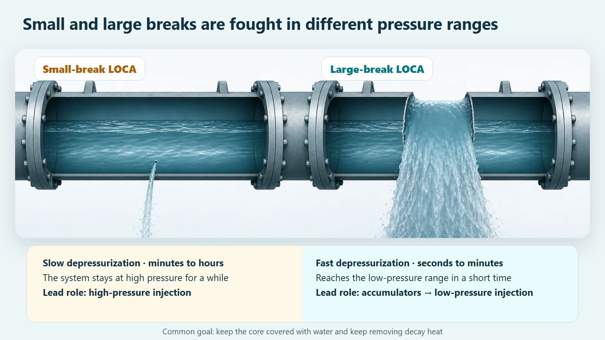

Safety Principles & Accident Analysis · 208
A Slow Leak or a Sudden Burst? — Small-Break LOCA vs Large-Break LOCA
A large break depressurizes in seconds; a small one lingers at high pressure for hours. The size of the hole changes which cooling means does the work.

Loss-of-coolant accidents are classified by the size of the break, because size sets how fast coolant is lost and pressure falls. A large break depressurizes within seconds to tens of seconds, so accumulators and low-pressure injection take the lead; a small break leaves the system at high pressure for minutes to hours, so high-pressure injection takes the lead. Neither is simply the more dangerous one.
A pinhole or a torn-away window
The cabin of an airliner flying high in the sky is actually a space packed with air at a higher pressure than outside. That cabin pressurization is what lets us breathe comfortably. But what happens if a hole opens somewhere in the fuselage? The interesting part is that what happens depends entirely on the size of the hole.
If it is a pinhole-sized gap, the cabin air seeps out slowly. The oxygen masks drop, and the pilots have time to bring the plane down gradually. But if a large window tears away completely, the air rushes out in an instant, and the crew must begin an emergency descent within seconds. Both are "a hole," yet the size alone changes the whole response.
Remarkably, nuclear power plants have exactly the same story. Today's topic is the difference between a small-break LOCA and a large-break LOCA.
So what is a LOCA?
LOCA stands for "loss-of-coolant accident." Inside a reactor, water (the coolant) carries heat away from the fuel at high pressure. If a pipe or component that this water passes through cracks or leaks, the water escapes from its normal path. An accident in which coolant leaks out like this is a LOCA. It closely resembles a leak in cabin pressure, except that what escapes is hot water, not air.
And just as in the airplane, nuclear engineers classify this accident by the size of the break. Small means a small-break LOCA; large means a large-break LOCA. Why size? Because the bigger the hole, the faster the water drains and the faster the pressure drops, just as a bathtub empties in no time when the drain hole is large.
Large-break LOCA: a torrent in seconds
When a large pipe breaks wide open, hot water gushes out like a waterfall and system pressure plunges within seconds to tens of seconds. (That time scale is conceptual; it depends on the reactor design and on the size and location of the break.) It is the torn-away window, with the cabin pressure gone in an instant.
Once pressure drops that sharply, the cooling means prepared in advance step in one after another. First, water tanks pressurized with nitrogen (accumulators) pour water into the core on their own the moment system pressure falls below theirs, with no valve to operate. Next, high-volume low-pressure injection covers the core with water again. The whole sequence moves very fast, on a scale of seconds to minutes.

Small-break LOCA: holding out at high pressure
So is a small break just a "weaker version"? Here comes a small twist.
With a small break the water drains slowly, so pressure falls gradually. The catch is that the system stays at high pressure for quite a while. When pressure is high, it is actually harder to push water back in against it. So in a small-break LOCA the lead role goes to high-pressure injection, which can push water in even at high pressure. The event unfolds at a more leisurely pace, over minutes to hours, which leaves more time to monitor and decide. But because it lasts longer and can keep losing water little by little, it needs a steady, sustained response.
Put together, the picture is interesting. It is not that "bigger is always harder"; rather, the size decides which cooling means does most of the work. In a large break, the fast pressure drop lets the low-pressure and passive means do their job, while in a small break the system stays at high pressure, so high-pressure injection and planned depressurization become the key. Back to the airplane: a small gap gives you time, but you have to manage the leak for a long time; a large rupture is urgent, but a set emergency procedure kicks in immediately. Fast doesn't mean more dangerous and slow doesn't mean safer; each carries a different kind of difficulty. (This is a conceptual summary, not a claim that one is always more dangerous; actual response performance depends on the reactor design.)

| Small-break LOCA | Large-break LOCA | |
|---|---|---|
| Depressurization | Gradual; stays at high pressure for a while | Plunges within seconds to tens of seconds |
| Time scale | Minutes to hours | Seconds to minutes |
| Lead cooling means | High-pressure injection, planned depressurization | Accumulators, then low-pressure injection |
| Main difficulty | Holding out at high pressure for a long time | Responding very fast |
In the end, one thing to protect
Small break or large, the goal is the same: keep the fuel covered with water and keep it cool. A reactor's heat does not vanish the moment the shutdown signal arrives, because "decay heat" from radioactive decay keeps coming for a while. So cooling must never stop, and the emergency core cooling system (ECCS) combines high-pressure, low-pressure and passive means so that it can handle the whole range, from the smallest break to the largest, each working in turn in a different pressure range.
That is why safety analysis does not fix a single break size. It splits breaks into many sizes, from small to large, and examines each one, because looking at just one size can miss a difficulty. Checking broadly that the core stays covered with water whatever the size of the hole is the basic stance behind designing and verifying a nuclear plant.
Common points of confusion
First, a LOCA does not mean the reactor is blown wide open. It is a break or leak somewhere in the boundary the coolant flows through, not a situation in which the pressure vessel itself disappears.
Second, a large break does not mean radioactive material immediately escapes. Several barriers, the fuel cladding, the pressure boundary and the containment building, along with the cooling response, stand in between.
Third, the "fast means disaster, slow means trivial" split is not accurate either. Fast depressurization has the advantage that the low-pressure means step in quickly; slow progression has the difficulty of holding out at high pressure for a long time.
Key takeaways
- A LOCA is an accident in which coolant (water) leaks out of its boundary; small and large LOCAs are distinguished by the size of the break.
- With a large break, pressure and water drop sharply over seconds to minutes; with a small break they fall gradually over minutes to hours, and the system stays at high pressure for a while.
- So accumulators and low-pressure injection lead in a large break, and high-pressure injection leads in a small break: size changes "who plays the lead."
- Bigger is not automatically more dangerous, and smaller is not trivial; both are accident scenarios the plant is designed to handle in advance.
- Because the size of a single hole changes the character of the accident, nuclear plants are designed with several kinds of cooling means layered together.
Just as a small gap and a large rupture in a fuselage call for completely different responses, small-break and large-break LOCAs show two different faces. Once you know the difference, it becomes a little clearer why nuclear plants prepare so many layers of cooling.